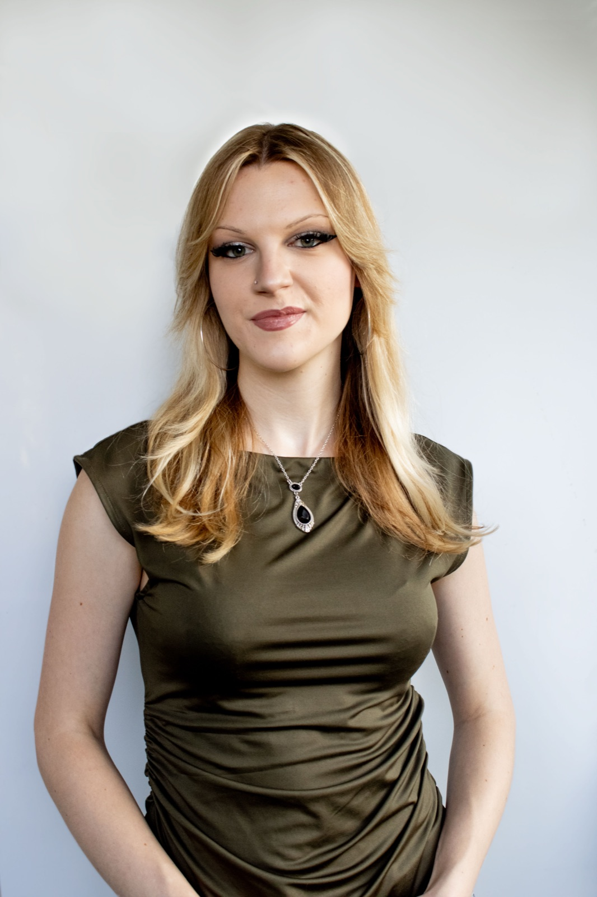

Hey there!
I’m Caroline, a designer and illustrator from New York. I’m a current senior at Washington University in St. Louis, where I’m studying Communication Design and Art History.
My creative practice weaves together contemporary experimentation with historical influence, especially the styles of Art Nouveau and Art Deco. I’m interested in the book as a limitless form, using it to explore expressions of identity and to experiment with illustration as an emotional, accessible language for all ages.
When I’m not glued to InDesign, I’m probably wandering the fin-de-siècle galleries of whichever art museum I’m visiting!
- on repeat — Talk Show Host, Radiohead.
- current obsession — halftone collages.
- currently working on — animated typeface teaser & memory box.
Education
Washington University in St. Louis
Sam Fox School of Design & Visual Arts
Contact
- cblazek07@gmail.com
- professional things
- Resume available upon request.
Experience
-
Graphic Design Intern — Katonah Wine & Liquor
-
Head of Marketing — Washington University Poker Club
-
UX & Product Design Intern — FulcrumQ
-
Editorial Illustrator — ARC Magazine
-
Painter & Artist’s Assistant — Sherwood Forest Design